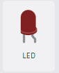
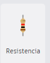
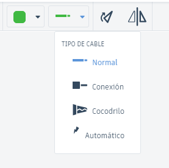

📙 Actividades
Encender y Apagar un LED con un Interruptor
Componentes Necesarios:
| 1. LED: Diodo emisor de luz. |  |
| 2. Resistor: Para limitar la corriente (220 ohmios). |  |
| 3. Interruptor: Para controlar el flujo de corriente. |  |
| 4. BaterÃa: Fuente de alimentación (por ejemplo, 9V). |  |
| 5. Cables: Para realizar las conexiones. |  |
 Pasos a Seguir:
1. Ve a Tinkercad (https://www.tinkercad.com) y crea un nuevo proyecto.
2. Agregar Componentes:
 En la sección de "Componentes", arrastra los siguientes elementos al área de trabajo:
 Un LED.
 Un Resistor (220 ohmios).
 Un Interruptor.
 Una BaterÃa de 9V.
3. Conectar los Componentes:
 Conecta el terminal positivo de la baterÃa al terminal de uno de los extremos del interruptor.
 Conecta el otro terminal del interruptor al terminal positivo del LED.
 Conecta el terminal negativo del LED al resistor y luego al terminal negativo de la baterÃa.
4. Simular el Circuito:
 Haz clic en el botón de "Iniciar Simulación".
 Usa el interruptor para encender y apagar el LED. Cuando el interruptor está en la posición "ON", el LED deberÃa encenderse; cuando está en "OFF", el LED deberÃa apagarse.